Fernbewerbung Hadiko
Hallo,
mein Name ist Ahmad Baki und ich schreibe diese Fernbewerbung, da ich leider nicht dazu in der Lage bin,
zu dem persönlichen Gesprächstermin zu erscheinen. Für keinen von uns eine gute Situation, um uns kennenzulernen.
Ich bin leider ebenfalls nicht besonders gut darin mich, in Text selber zu beschreiben (wer ist das schon?), machen
wir aber das beste daraus, damit ich hoffentlich sicher angenommen werde. Da ich keine rechte Idee habe, was in diesen
Text reingehört, werde ich einfach ein bisschen über mich selber labern, in der Hoffnung, dass ich genug Kriterien in
der Kriterienliste erfülle um durchzukommen, so jedenfalls habe ich es im Deutsch-Abi gemacht. Und der Fakt, dass ich
mich hier bewerbe, sollte Aufschluss über die Effektivität dieser Strategie geben (Ich hab 5 Punkte bekommen).
Ich denke wie bei jeder guten Geschichte sollte man beim Anfang starten. Das hier ist die Geschichte von Ahmad:
Vorgeschichte
Vor langer langer Zeit (19 Jahre) wurde in einem weit entfernten Ort (Mainz) ein Junge geboren, der den Namen Ahmad Baki tragen sollte. Seine Eltern kamen beide aus dem warmen Irak. Aber der Ahmad war nicht das einzige Kind, nach ihm spawnten 3 weitere Kreaturen namens: Geschwister.
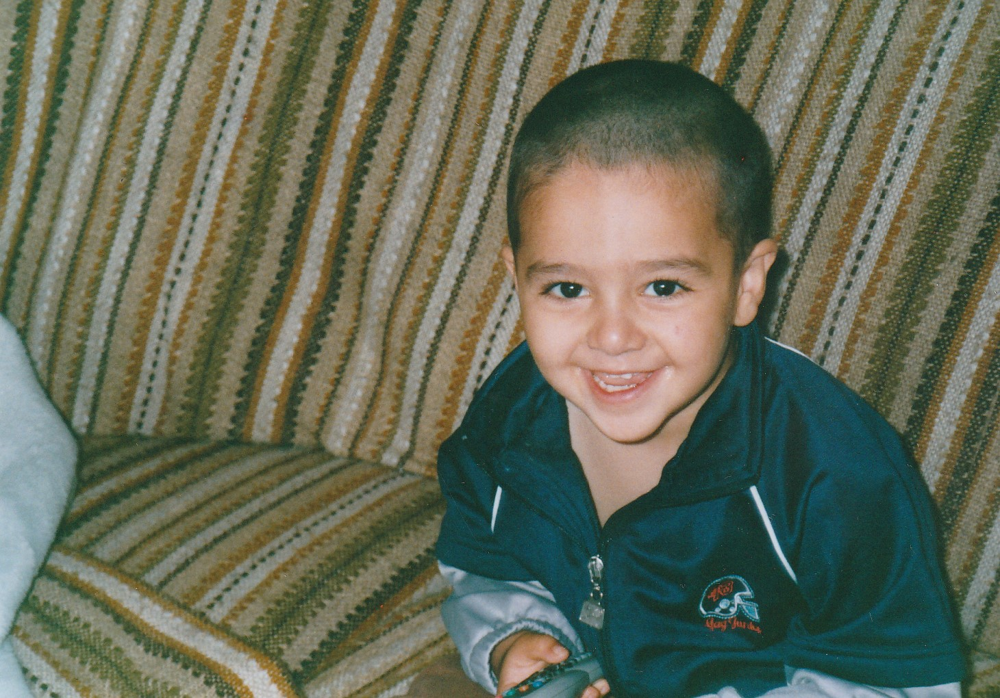
Seine Eltern hatten aber mit dem kleinen Ahmad alle Hände voll zu tun. Zum einen war da sein gesundheitlicher
Zustand. Ahmad hatte schon als Kind schweres Asthma und eine endlos lange Liste an Allergien, welche, bei Kontakt
mit dem Allergen, das Asthma auch noch triggerten.
Ebenfalls sprach er bis zum 4. Lebensjahr nur Babysprache, bis
sie heraus fanden, dass seine Polypen entzündet waren. Dadurch war es zu einer Sekretansammlung im Mittelohr gekommen,
wodurch Ahmad stark schwerhörig geworden war. Daraufhin wurden seine Mandeln entfernt, jedoch war Ahmad in seiner
Sprachentwicklung etwas zurückgeblieben.
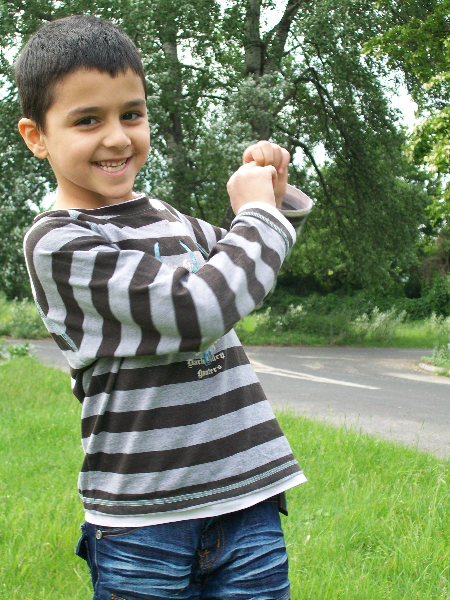
Darauf folgten zwei Jahre Förderschule (Astrid-Lindgren Schule) mit Fokus auf Sprachentwicklung und viele Jahre Logopädie. Zu dieser Zeit entdeckte aber der junge Ahmad seine Liebe fürs Lesen und die Naturwissenschaft. Diese Liebe wurde aktiv von seinen supportiven Lehrern, Logopäden und Eltern gefördert. Dadurch entwickelte sich Ahmads Neugierde und Freude am Lernen. Ihm war damals klar, dass er später Wissenschaftler werden wollte.
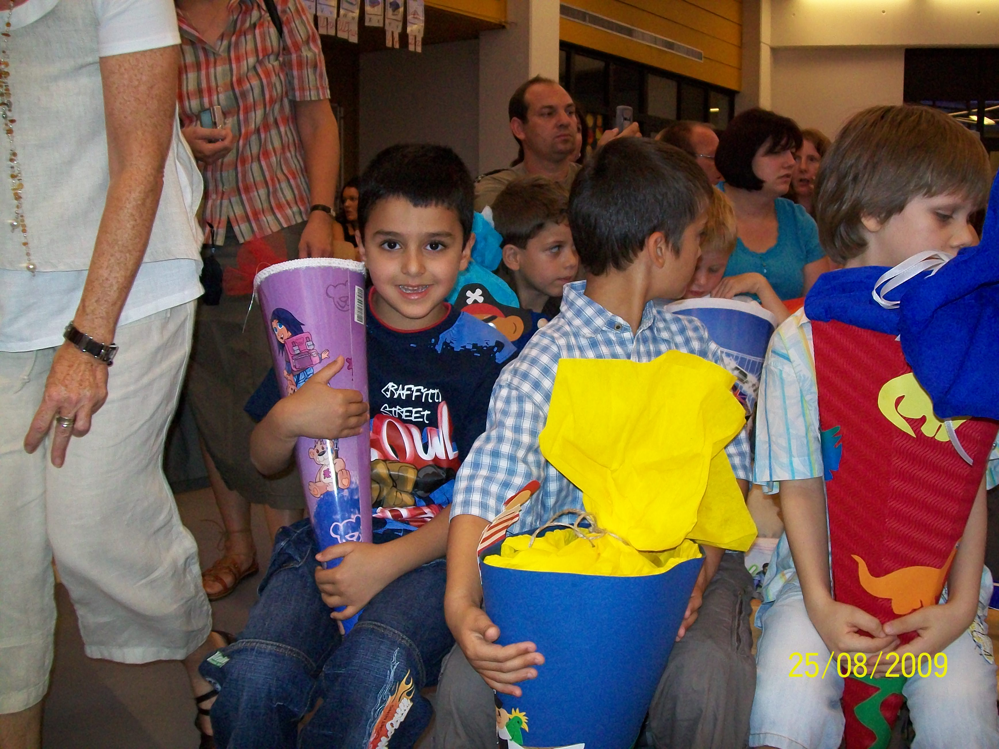
Jedoch hatten die Eltern aber ein großes Problem im Bezug zu Ahmad: Er war unglaublich vorlaut und lies sich von niemanden
etwas bieten. Er hörte nicht auf Autoritäten und scheute keinen Konflikt, wenn ihm etwas als nicht passend erschien. Dies
ist eine Eigenschaft, die, zwar mit der Zeit etwas milder wurde, die er aber trotzdem beibehalten wird.
Zwar plagten Ahmad mit seinem Asthma und wachsender Liste an Allergien (Ahmads Allergien vermehren sich schneller als Kaninchen)
gesundheitliche Beschwerden, jedoch war das nichts, dem seine Eltern mit erzwungener Einschreibung in Sportvereinen keine Beihilfe
leisten konnten.
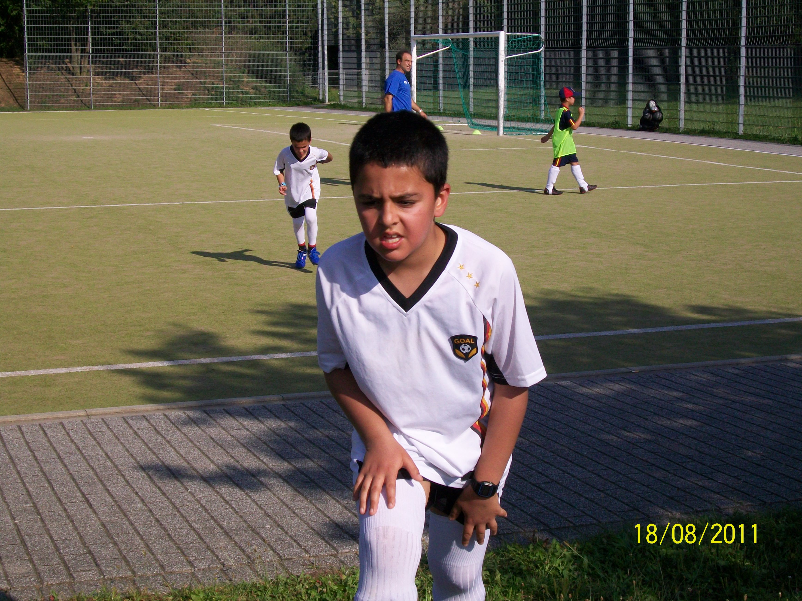
So vergingen Ahmads Grundschuljahre. Dann kam das Gymnasium.
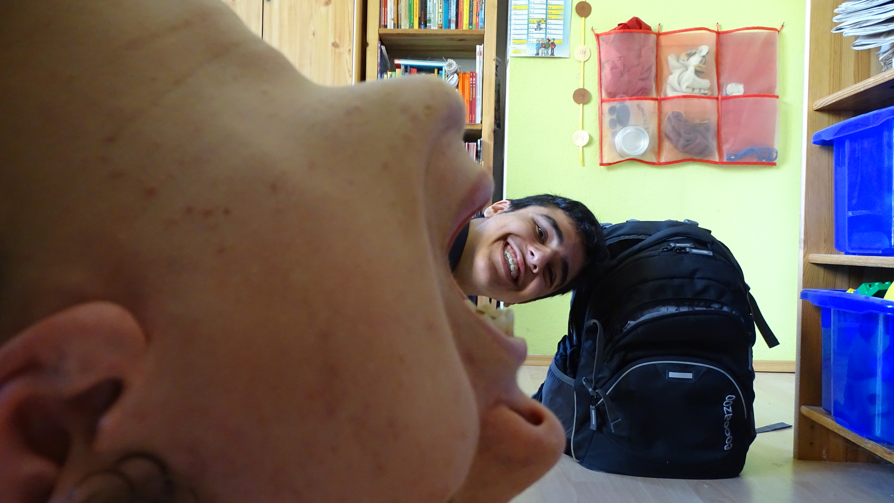
Ahmad fand dort schnell gute Freunde und machte es sich in diesem Freundeskreis bequem. Etwas zu bequem. Den auch als sein Freundeskreis immer kleiner wurde, als Leute wegzogen, zu anderen Schulen wechselten oder bloß die Klasse wiederholten, machte er sich nicht die Mühe neue Freunde zu finden. Ahmad hatte vergessen wie man den ersten Schritt macht um neue Freunde zu finden und war zu nervös um es überhaupt zu versuchen. Er wurde zu dieser Zeit sehr introvertiert.

Parallel dazu bahnte sich ein riesiges Ereignis in Ahmads Leben an: Er wollte ein Videospiel entwickeln. Er hatte zwar nicht die
leiseste Ahnung wie so etwas geht, aber er ließ sich davon nicht abbringen. Er wusste immerhin, dass man so etwas namens “programmieren”
braucht. Also machte er sich auf den Weg zur Bibliothek und lieh das erste Buch zu diesem Thema aus, was er finden konnte. Der Titel des
Buches lautete: “Hello World!: Programmieren für Kids und andere Anfänger”, was ein neues Kapitel im Leben unseres Ahmads öffnet. Ahmad
wollte die Übungen, welche im Buch beschrieben waren, machen, weswegen Ahmad Python, mithilfe der beigelegten CD, auf dem Heimrechner
installieren wollte. Dabei ging irgendetwas schief, wodurch der kleine Ahmad den PC schrottete. Nach der Reparatur waren alle Dateien,
welche auf dem PC gespeichert waren weg. Ahmad wurde verboten diesen PC ab sofort überhaupt anzufassen. Ahmad ließ sich davon nicht
beirren und installierte Python auf dem PC eines Freundes, mit dem zusammen er auch die Aufgaben im Buch bearbeitete.
Irgendwann hat Ahmad genug Geld gespart um sich seinen eigenen Computer zu bauen, womit er dann auch alleine weiter programmierte und
experimentierte. Ahmad betrat den Pfad des Informatikers.

Am Ende der Mittelstufe blickte Ahmad auf sein Leben und entschied sich, dass es nicht mehr so weitergehen konnte. Er entschied sich sein Leben anzugehen und an sich zu arbeiten. Er begann jeden Tag 5km joggen zu gehen und verlor im Verlauf einiger Monate über 20kg, er ging von über 85kg auf 65kg. Dadurch verbesserte sich seine Ausdauer so sehr, dass sein Hausarzt sagte, dass er seine Asthma-Medikamente absetzten sollte, da die Nebenwirkungen die positiven Effekte überwogen.


Er entschied sich ebenfalls mehr mit seinen Mitmenschen zu interagieren, und aus seiner introvertierten Schale herauszukommen, da Ahmad die Gesellschaft von anderen Menschen eigentlich genoss. Es hat funktioniert. Ahmad fand in der Oberstufe neue Freunde und bemerkte eine persönliche Entwicklung in eine Richtung die ihm sehr gefiel. Er begann auf anderen Menschen zuzugehen und fing auch an, Gespräche zu beginnen. Natürlich ist Ahmad noch weit von seinem Ideal entfernt, jedoch sah er sich auf dem richtigen Weg.

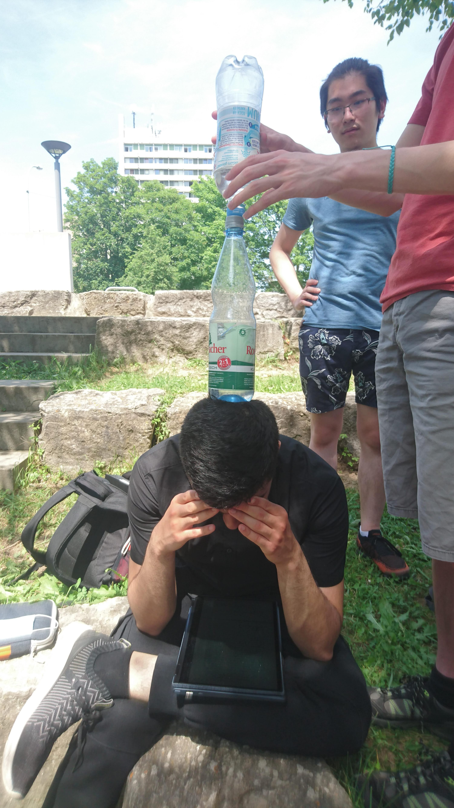


Ebenfalls ersetzte er das Joggen mit dem Krafttraining, in der Hoffnung Masse zu gewinnen (er erzielt nur mäßige Erfolge).
Parallel wuchs seine Liebe für die Informatik und sein Entschluss, Informatik zu studieren, wurde immer fester. Ahmad beschäftigt sich nicht selten
wochenlang mit Problemen, welche, außer für die Stillung seiner Neugierde, keinen praktischen Zweck erfüllten.
Freizeit
Den großteil meiner Freizeit verbringe ich eigentlich mit Programmieren. Ich hab keinen speziellen Bereich auf den ich mich fokussiere. Meistens sieht der Prozess folgendermaßen aus:
- Ich finde etwas im Internet was cool erscheint und mein Interesse weckt.
- Ich überlege, was ich machen könnte, was diese coole Sache integriert.
- Ich verbringe die nächsten Wochen damit es zum Laufen zu kriegen.
Mein jüngstes Projekt beschäftigt sich beispielsweise mit dem Wave-Collapse-Algorithm. Ich weiß nicht, ob dieser Text von einem
Informatiker gelesen wird, weswegen ich jetzt nicht näher darauf eingehen werde, jedoch habe ich das YouTube-Video verlinkt,
was mir die ursprüngliche Idee dafür gegeben hat.
Im Allgemeinen haben die Projekte eher die Aufgabe meine Neugierde zu stillen, jedoch arbeite ich gerne zusammen in einer Gruppe an
größeren Projekten. Bspw. entwickle ich gerne zusammen mit Freunden Videospiele (wenn wir eine Person finden, welche die Grafik macht).
Ebenfalls spiele ich gerne Videospiele in meiner Freizeit (wie unerwartet). Vor Kurzem habe ich angefangen Total War: Three Kindoms zu
suchten, was ein rundenbasiertes Strategiespiel ist, in dem ich bereits 109 Spielstunden habe.
Zudem schaue ich auch noch gerne Anime. Meine Top 3 wären: Death Note, Code Geass und Attack on Titan. Ja ich weiß, dass es eine
ziemlich typische Liste ist, jedoch ist die Popularität dieser Animes verdient, da sie einfach gut sind.
Zudem gehe ich gerne und regelmäßig ins Fitnessstudio um zu trainieren. Dies tue ich gerne auch mit anderen Menschen, wie bspw.
meinem Bruder oder Freunden.
Ansonsten chille ich gerne mit meinen Freunden, sei es auf Discord oder im echten Leben. Ich mag es mich zu treffen, einen Tee
zu trinken und spontane Diskussionen zu haben.

Persönlichkeit
Das ist - finde ich - der schwierigste Teil. Ich konnte mich oben ein bisschen von meiner Lebensgeschichte distanzieren, indem ich in
der dritten Person über mich selber geredet habe. Hier wäre es zu peinlich gewesen dieselbe Strategie anzuwenden.
Ich würd mich als sehr neugierig bezeichnen, falls ich es bisher nicht oft genug erwähnt haben sollte. Neugier ist meistens mein primärer
Motivator um Zeug zu machen. Ich mag es mich über Themen zu informieren um zu verstehen wie diese funktionieren. Ich hasse es keine Antwort
auf Fragen zu haben und werde alles in meiner Macht stehende tun (oder bis ich etwas anderes finde) um diese zu finden.
Ich würde mich ebenfalls als eine sehr lebensfrohe Person bezeichnen. Ich trage praktisch den gesamten Tag über ein Lächeln im Gesicht.
Mir wird auch von Freunden und Bekannten gesagt, dass das Lächeln mein neutrales Gesicht sei. Ich bin meistens gegenüber Problemen relativ
gelassen und es ist schwer mich negativ emotional zu belasten. Ich genieße das Existieren im Hier und Jetzt.
Außerdem habe ich einen sehr ausgeprägten Humor. Ich kann über eine große Menge an Witzen lachen, sei es schwarzer oder flacher
Humor. Ich reiße den ganzen Tag über Witze und kann genauso gut über mich selber, wie auch andere lachen.
Ich bin auch relativ tolerant wenn es um die Eigenheiten oder die Persönlichkeiten meiner Mitmenschen geht. Da ich anderen Menschen
generell gelassen entgegen treten, fällt es mir leicht, positive Beziehungen mit einer großen Menge an Bekannten aufrechtzuerhalten.
Ich habe natürlich auch meine Eigenheiten. Es ist wahrscheinlich keine gute Idee, diese am Ende hinzupacken, da ich es aber in der
Reihenfolge hinschreibe, wie es mir in den Kopf kommt, kann man da auch nicht viel machen.
Zum einen fällt es mir unglaublich schwer Namen zu merken. Ich weiß, dass das etwas ist, was viele Leute von sich behaupten,
aber bei mir ist es wirklich der Fall. Ich sitze neben Personen seit über zwei Jahren in einem Klassenraum, kann mir aber
trotzdem nicht deren Namen merken, obwohl wir uns regelmäßig unterhalten. Dies ist auch nicht böse gemeint, aber mir fällt es
allgemein unglaublich schwer neue Wörter zu merken.
Außerdem sage ich ich offen was ich denke. Das ist jetzt nicht direkt eine negative Eigenschaft von mir, jedoch ist es eine
Eigenart die ich habe. Ich trage mein Herz auf meiner Zunge und sage auch das was ich meine. Und wenn mir etwas nicht gefällt
halte ich mich auch nicht zurück um es auszusprechen. Ich bin da sehr transparent.
Soziale Interaktion
Ich hab mich in diesem Aspekt in den letzten paar Jahren sehr gewandelt. Ich hab kein Problem damit Leute als erstes anzusprechen und neue Freundschaften zu schließen. Ich bevorzuge trotzdem enge Freundschaften in denen man das alles miteinander teilt. Ich genieße die Gemeinschaft von anderen Menschen, selbst wenn man nicht unbedingt miteinander redet oder etwas unternimmt. Ich ziehe mich trotzdem gerne zurück, wenn ich Arbeit fertig kriegen möchte. Ich lasse mich nämlich extrem leicht ablenken und bekomme dementsprechend keine Arbeit fertig, wenn ich mit anderen Menschen zusammen abhänge. Aber abgesehen von konzentriertem Arbeiten, verbringe ich gerne viel Zeit mit Menschen.

Reviews
Wir haben Nutzer von Ahmad™ gefragt, was sie davon halten, hier sind die Antworten:
Tobias (kurzzeitiger Zimmergenosse)
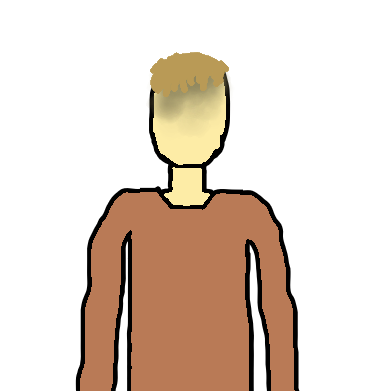
- Character: macht Späße im Rahmen der Regeln und nimmt dabei Rücksicht auf andere
- kann sich mit vielen Leuten gut verstehen, schließt niemanden aus (meistens)
- offen für neues
- einigt sich mit WG-Partner/Wohnpartner auf Aufsteh-/Schlafenszeiten ohne große Probleme.
Martin
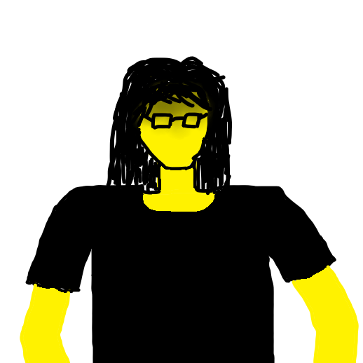
- Ambitioniert aber leicht ablenkbar
- Zielstrebend aber selbstüberschätzend
- Engagiert in seinen Interessensgebiete
- Kooperationsfreudig
- Interessiert an Neues
Lale
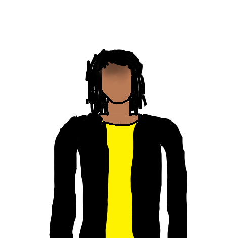
- gut, engagiert in seinen Interessengebieten
- man kann sinnvolle, sachliche Gespräche mit ihm führen
- diskutierfreudig und gut im argumentieren (aber nicht so gut wie er denkt)
- man kann gut mit ihm Koexistieren
Florian
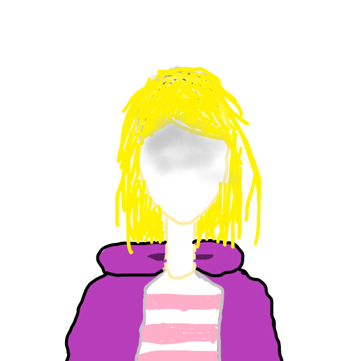
Ahmad ist ein sehr lustiger und aufgeschlossener Mensch.
Auch wenn er manchmal etwas streitsüchtig / provokant (bei Freunden) wirkt, ist das mit ziemlicher Sicherheit nur der Anfang eines freundschaftlichen Kleinkriegs.
Ahmad tendiert dazu, sich bekannt zu machen (Beispielsweise waren wir in der Oberstufe mit zwei Kursen: Physik und Mathe auf einem Wandertag unterwegs und Ahmad
war am Ende auf beiden Kursbildern zu finden, da er sich auch beim Kursbild des Physikkurses dazustellte.
Dies ist keine schlechte Eigenschaft, meiner Meinung nach ist es eher gut, da er in unserer Freundesgruppe immer für gute Laune oder einen Lacher sorgt.
Seine ein wenig vorlaute Art kombiniert mit seinem unverkennbaren Lächeln, welches er immer, und ich meine wirklich IMMER auf den Lippen trägt, sorgen auch dafür,
dass er leicht Gespräche anfangen kann. Obwohl man manchmal nicht direkt erkennen kann, ob Ahmad etwas ironisch meint oder nicht (vor allem bei politischen Themen
um den Kommunismus), kann man sich sehr gut mit ihm (über so ziemlich alle Themen) unterhalten oder auch nach seiner Meinung fragen.
Wenn man je jemanden braucht, um in einer tristen Umgebung für gute Laune zu sorgen, muss man nur Ahmad und jemanden, der seine Meinung nicht ganz
vertritt (vor allem bei philosophischen Themen zu empfehlen) zusammensetzen und schon hat man eine stundenlange Diskussion mit teils sehr amüsanten Gedankengängen
und Widersprüchen.
Ahmad programmiert in seiner Freizeit sehr gerne, auch wenn ihm oft die Motivation fehlt. Dann prokrastiniert er sehr gerne, indem er Videospiele spielt oder
sich in den Untiefen des Internets verirrt. Falls er aber Motivation hat, etwas zuende zu bringen, sitzt er lange an einem Projekt und arbeitet viel dafür.
Alles in allem ist Ahmad ein Mensch, mit dem die meisten Menschen super auskommen, wenn sie erstmal seine "komische" Art am Anfang überwunden haben.
Joshua
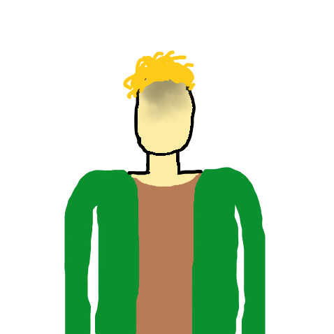
Ahmad ist ein Freund. Und was für einer. Er mag eine Art haben, die einen zuerst etwas verwirren kann, aber man kann sich auf ihn verlassen, und darauf, dass er einem gutes will. Er mag manchmal etwas schwer von Begriff sein, aber sofern man ihm gegenüber so ist wie er – ehrlich und hintergedankenlos – so findet man in ihm einen zuvorkommenden, loyalen, witzigen und nicht zuletzt ziemlich genialen Freund, der immer mal wieder einen “oooh”-Moment im Petto hat. 9,5/10, würde ich wieder machen.